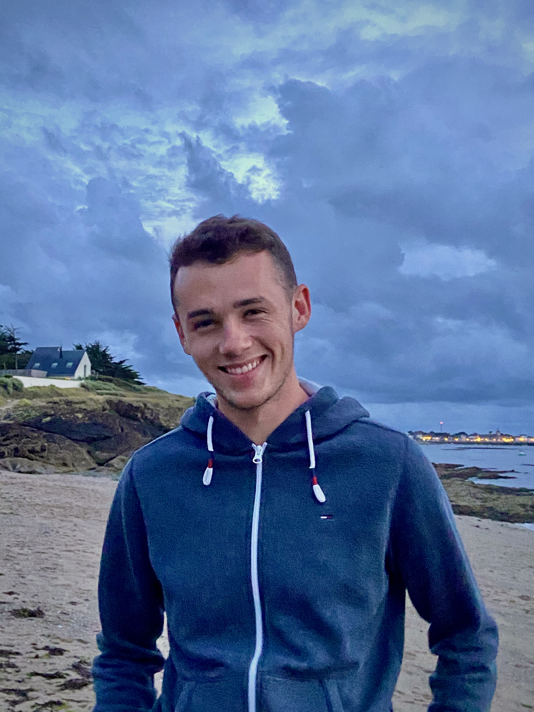

Baptiste Diais - Mon profil

Je m'appelle Baptiste Diais, j'ai 19 ans et je suis en troisième et dernière année de mon Bachelor in management au sein d'Audencia Business School. Après avoir effectué un stage et au Danemark et en Belgique durant mes deux premières années, je suis aujourd'hui en alternance au sein de l'entreprise Hervé située à Juigné-des-Moutiers en tant que technico-commercial.
Vous trouverez ci-dessous un lien allant sur mon profil LinkedIn, n'hésitez pas à m'ajouter !
Mes différentes expériences professionnelles durant mon parcours à Audencia Bachelors
J'ai eu l'occasion de faire un stage de deux mois au Danemark au sein de l'entreprise BouMatic en tant qu'assistant marketing dans le cadre de ma première année. J'ai pu effectuer un autre stage de quatre mois en Belgique au sein de l'entreprise FordStore Vanspringel Automobiles en tant que conseiller commercial automobile. Puis cet été j'ai obtenu un contrat CDD de deux mois au sein de l'entreprise Diais Piscine et Spa en tant que technicien pisciniste
Ma passion : les sports automobiles
Je suis un grand fan de sports automobiles, que ce soit sur asphalte ou sur terre. Je suis particulièrement le championnat du monde d'endurance, de formule 1, de rallycross, le trophée andros...
Mon sport automobile préféré reste l'autocross, je suis ce sport depuis mon plus jeune âge que ce soit au niveau français qu'européen
Les voyages que j'ai pu effectuer
J'ai eu l'occasion de beaucoup voyager : j'ai pu aller en Espagne, au Maroc, aux États-Unis, en Martinique, en République Dominicaine, en Italie, en Angleterre, en Tunisie, au Danemark, en Belgique, aux Pays-Bas...